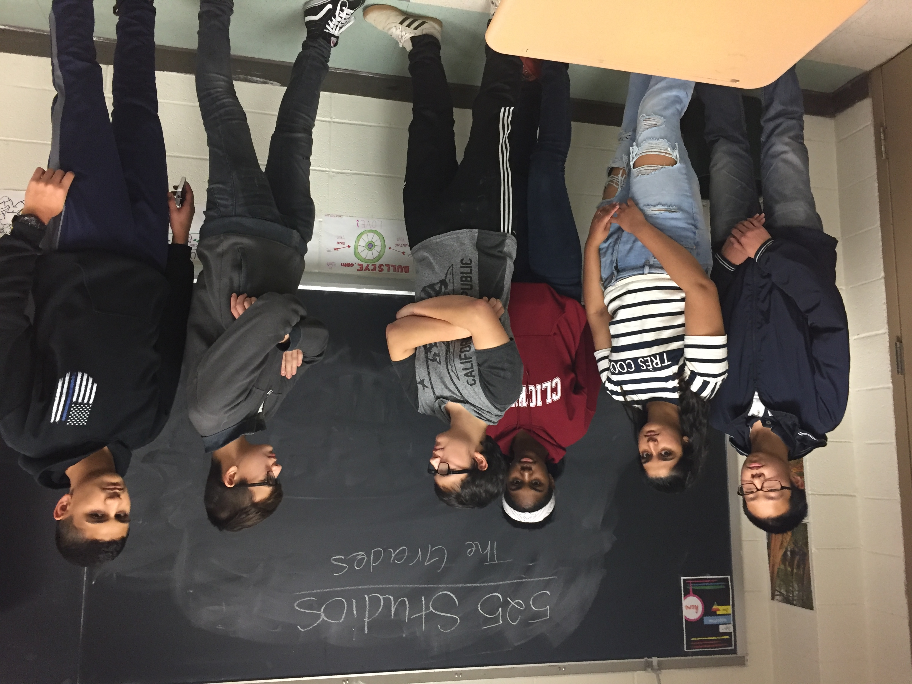

×
Synopsis
Disseus and his friends are really smart kids who always get 95% and above on their exams, projects, and homework in order to remain in their totalitarian society where high grades in school are a MUST as students with high grades compete to stay ;un-exciled; (idk what to put). Towards the middle of the school year, a classmate named Clyde is assigned a group project with Disseus and a few of his friends. However Disseus and his friends always neglected Clyde and made fun of him. This made him really angry and caused him to do something that would severely affect Disseus and his friends. After a couple of days, Disseus and his friends noticed that all their grades have dropped significantly, even their group project with Clyde in ELA. This shook them as if this kept up they would be exiles to the society. They asked their teacher Mr. Athenus to look over their grade, and Mr. Athenus noticed that the grade was incorrect. In his grading book it said 50%, but he remembers giving them a 95%. Mr Athenus, Disseus, and Disseus’ friends determined that someone hacked their accounts to alter their grades, and eventually find out that it was someone at the headquarters of JupiterEd. Disseus and his friends venture to the headquarters to change their grades, but are faced with obstacles such as their consciousness being transferred to a computer to a battle against the hacker and his child towards the end.The hacker and child is none other than the CEO of JupiterEd, Mr. McPoison, and Clyde who wanted revenge on Disseus and his friends. In the end, Disseus defeats Mr. McPoison and Clyde in the digital realm, exposing the CEO, and restoring his grades back to normal to remain in the society at the expense of sacrificing his dear friends.
×
Characters
Disseus (Dice-ius)- Similar to Odysseus in the Odyssey, as he is the powerful hero who restores his and his friends' grades. His name is based on Odysseus' name, but also off of the first part “Disse” which is similar to dice, representing that his life in the society is being gambled on by the higher powers (with one of them being Mr. McPoison).
Clyde (Kl-i-d)- Similar to the Cyclops in the Odyssey, as he is disrespected by Disseus and his friends who do not know that his father is part of the higher powers.
Mr. Athenus (Ath-E-nus)- Similar to Athena in the Odyssey, as he guides Disseus and his friends on the right path to restoring their grades and reentering society.
Mr. McPoison (Mc-Poison)- Similar to Poseidon in the Odyssey as he is the one who puts Disseus through the many challenges he will face to make it back into the society (home).
Crena (Cre-na)- Similar to anyone of the crew members as she helps Disseus through the many challenges he will face throughout the realm. Also, Crena and the rest of Disseus' friends are sacrificed so Disseus can get back home.
×
About
Directed By: Joshua Ashvil
Written By: Zeyad Shariff and Noah Stein
Production Designer: Oscar Xu
Executive Producer: Amar Maksumic
Starring: Noah Stein, Zeyad Shariff, Amar Maksumic, Oscar Xu, Nilanga Gunaratna, Mr. Dunbar, and Xandria Crosland
.png)
"Take an adventure inside your gradebook"
Summer 2018

|
Trailer
|
In Summer of 2018 the new blockbuster "The Grades" will come out.
Disseus and his friends will go through multiple challenges to fix the mistake they have caused.
A mistake that could end the lives of themselves and their family.
Will they be able to correct their mistake?
Who will stand out and guide them?
Who will they sacrifice for the good of all?
Find out in the upcoming blockbuster, "The Grades."
|
×
Episode 1
Episode 1: Disseus and his friends are really smart kids who always get 95% and above on their exams, projects, and homework, in order to remain in their totalitarian society where high grades in school are a MUST. Students with Low grades are exiled from society. Towards the middle of the school year, a classmate named Clyde is assigned a group project with Disseus and a few of his friends. However, Disseus and his friends always neglected Clyde and made fun of him. This made him really angry and caused him to do something that would severely affect Disseus and his friends.
×
Episode 2
Episode 2: After a couple of days, Disseus and his friends noticed that all their grades have dropped significantly, even their group project with Clyde in ELA. This shook them because this could get them exiled from society. They asked their teacher Mr. Athenus to look at their grade and he noticed that the grade was incorrect. In his grading book it said 60%, but he remembers giving them a 95%. Mr. Athenus, Disseus, and Disseus’ friends determined that someone hacked their accounts to alter their grades, and eventually find out that it was someone at the headquarters of Jupiter Ed.
×
Episode 3
Episode 3-4: After the group of friends eventually find out that it was someone at the headquarters of Jupiter Ed who hacked their grades, they venture to the headquarters to change their grades but are faced with obstacles such as their consciousness being transferred to a computer to a battle against the hacker and his child towards the end. The hacker and child is none other than the CEO of Jupiter Ed, Mr. McPoison, and Clyde who wanted revenge on Disseus and his friends.
×
Episode 4
Episode 3-4: After the group of friends eventually find out that it was someone at the headquarters of Jupiter Ed who hacked their grades, they venture to the headquarters to change their grades but are faced with obstacles such as their consciousness being transferred to a computer to a battle against the hacker and his child towards the end. The hacker and child is none other than the CEO of Jupiter Ed, Mr. McPoison, and Clyde who wanted revenge on Disseus and his friends.
×
Episode 5
Episode 5: In the end, Disseus defeats Mr. McPoison and Clyde in the digital realm, exposing the CEO, and restored his grades back to normal to remain in the society at the expense of sacrificing his dear friends. After this whole incident, Mr. Athenius knew to use eschool data from now on.